Warum zerlegenWhy split
Zwei Grenzen zwingen zum Schneiden. Das Embedding-Modell multilingual-e5-small liest höchstens 512 Tokens; was länger ist, wird stillschweigend abgeschnitten und fehlt im Vektor. Und das Kontextbudget der Antwort ist begrenzt: Das Fallbeispiel übergibt höchstens 14 000 Zeichen, also nur die passenden Stücke, nicht das Handbuch. Ein Chunk ist ein solches Stück: ein zusammenhängender Text, der einen eigenen Vektor bekommt, mit Metadaten zu seiner Herkunft. Im Fallbeispiel sind es 346 Chunks mit im Mittel 75,7 Tokens; der längste hat 439.
Two limits force the cut. The embedding model multilingual-e5-small reads at most 512 tokens; anything longer is silently truncated and missing from the vector. And the answer's context budget is limited: the case study passes at most 14,000 characters, i.e. only the matching pieces, not the manual. A chunk is such a piece: a contiguous text that gets a vector of its own, with metadata about its origin. In the case study there are 346 chunks with 75.7 tokens on average; the longest has 439.
- Zu kleinToo smallEin halber Satz trägt keine Bedeutung; der Vektor passt zu vielem und nichts, die Antwort bekommt Fragmente.Half a sentence carries no meaning; the vector fits many things and nothing, the answer gets fragments.
- Zu großToo largeDer Vektor mittelt über mehrere Themen; die eine gesuchte Zeile geht unter, und der Kontext füllt sich mit Beifang.The vector averages over several topics; the one line sought drowns, and the context fills with bycatch.
- RichtigRightEine Sache je Chunk, an natürlichen Grenzen: Überschrift, Absatz, Tabellenzeile, Verfahren.One thing per chunk, at natural boundaries: heading, paragraph, table row, procedure.
Vier StrategienFour strategies
| StrategieStrategy | SchnittCut | StärkeStrength | SchwächeWeakness |
|---|---|---|---|
| Feste LängeFixed length | alle n Zeichen oder Tokens, mit Überlappungevery n characters or tokens, with overlap | einfach, vorhersagbare Größesimple, predictable size | schneidet mitten in Satz, Zeile und Anleitungcuts mid-sentence, mid-row, mid-instruction |
| SätzeSentences | ganze Sätze bis zur Zielgrößewhole sentences up to the target size | lesbare Chunksreadable chunks | kennt keine Tabellen, keine Überschriftenknows no tables, no headings |
| StrukturStructure | an Überschriften (Markdown), Absätzenat headings (Markdown), paragraphs | Chunks entsprechen Abschnitten des Dokumentschunks correspond to document sections | ungleich groß; flache Überschriften trennen Zusammengehörigesunequal in size; flat headings separate what belongs together |
| TabellenzeileTable row | je Datenzeile ein Chunk mit Kopfzeileone chunk per data row with header | ein Fehlercode, eine Störung je Chunkone error code, one fault per chunk | braucht eine erkannte Tabelle; Fließtext bleibt Struktur-Chunkneeds a recognised table; prose stays a structure chunk |
Das Fallbeispiel kombiniert die letzten drei in prepare_nodes(): zuerst Abschnitte je Überschrift (MarkdownNodeParser aus LlamaIndex), dann Tabellenzeilen für große Tabellen, dann eine Längenbegrenzung mit dem SentenceSplitter, der an Satzgrenzen schneidet. Von den 346 Chunks stammen 130 aus Tabellenzeilen.
The case study combines the last three in prepare_nodes(): first sections per heading (MarkdownNodeParser from LlamaIndex), then table rows for large tables, then a length limit with the SentenceSplitter, which cuts at sentence boundaries. Of the 346 chunks, 130 come from table rows.


prepare_nodes() in rag_engine.py.The four stages of prepare_nodes() in rag_engine.py.Tokens statt ZeichenTokens instead of characters
Die Grenze des Embedding-Modells ist in Tokens definiert, also misst das Fallbeispiel in Tokens: CHUNK_TOKENS=440 und CHUNK_OVERLAP=40, gezählt mit dem Tokenizer des e5-Modells, den build_or_load_index() dem Splitter übergibt. 440 statt 512, weil das Modell zwei Sondertokens und das Präfix passage: anhängt und der Splitter Satzgrenzen bevorzugt, also etwas Spiel braucht; der Code prüft CHUNK_TOKENS < max_seq_length − 8 und bricht sonst ab. Die Überlappung wiederholt die letzten 40 Tokens eines Chunks am Anfang des nächsten, damit ein Satz an der Schnittstelle nicht verloren geht; das kostet rund zehn Prozent mehr Text im Index. Ein Zeichenmaß wäre sprachabhängig: Deutsch braucht mit diesem Tokenizer 4,72 Zeichen je Token, Englisch weniger.
The embedding model's limit is defined in tokens, so the case study measures in tokens: CHUNK_TOKENS=440 and CHUNK_OVERLAP=40, counted with the e5 model's tokenizer, which build_or_load_index() hands to the splitter. 440 instead of 512 because the model appends two special tokens and the prefix passage: and the splitter prefers sentence boundaries, so it needs some slack; the code checks CHUNK_TOKENS < max_seq_length − 8 and stops otherwise. The overlap repeats the last 40 tokens of a chunk at the start of the next, so that a sentence at the cut is not lost; that costs about ten percent more text in the index. A character measure would be language-dependent: German needs 4.72 characters per token with this tokenizer, English fewer.
splitter = SentenceSplitter(chunk_size=CHUNK_TOKENS, chunk_overlap=CHUNK_OVERLAP, tokenizer=tokenizer)
for node in nodes:
for part in splitter.split_text(node.text):
result.append(TextNode(text=part, metadata=metadata,
excluded_embed_metadata_keys=list(metadata),
excluded_llm_metadata_keys=list(metadata)))
Aus prepare_nodes(): Der Splitter bekommt den echten Tokenizer; die Metadaten werden mitgeführt, aber vom Embedding und vom Modelltext ausgeschlossen.From prepare_nodes(): the splitter gets the real tokenizer; the metadata are carried along but excluded from the embedding and the model text.
Tabellenzeilen: die E:18-Zeile wird ein ChunkTable rows: the E:18 row becomes a chunk
Der Abschnitt „Hinweise im Anzeigefeld“ ist eine Tabelle von 6 389 Zeichen. Als ein Chunk embeddet sie, wie der Code sagt, als „unspezifischer Brei“ und wird für die Frage nach E:18 nicht gefunden. _explode_markdown_tables() zerlegt deshalb jeden Abschnitt über MAX_NODE_CHARS=1600 Zeichen mit mindestens drei Tabellenzeilen: Der Fließtext bleibt ein Chunk, und jede Datenzeile wird ein eigener Chunk aus Überschrift, Spaltenköpfen und Zellen. Leere erste Zellen einer Fortsetzungszeile übernehmen den Betreff der Zeile darüber. So sieht der E:18-Chunk im Index aus, 61 Tokens lang:
The section “Hinweise im Anzeigefeld” is a table of 6,389 characters. As one chunk it embeds, as the code says, as an “unspecific mush” and is not found for the question about E:18. _explode_markdown_tables() therefore splits every section over MAX_NODE_CHARS=1600 characters with at least three table lines: the prose stays one chunk, and every data row becomes a chunk of its own from heading, column labels and cells. Empty first cells of a continuation row take over the subject of the row above. This is what the E:18 chunk looks like in the index, 61 tokens long:
## Hinweise im Anzeigefeld Anzeige: E:18; Ursache/Abhilfe: ■ Laugenpumpe verstopft. Laugenpumpe reinigen. ~ Seite 30 ■ Ablaufschlauch/Abflussrohr verstopft. Ablaufschlauch am Siphon reinigen. ~ Seite 31
Die Überschrift bleibt Teil des Texts, damit der Vektor weiß, dass es um Anzeigen geht; die Spaltenköpfe „Anzeige“ und „Ursache/Abhilfe“ machen aus den Zellen einen lesbaren Satz. Elf Abschnitte des Handbuchs werden so zerlegt, darunter die Programmübersicht und die Störungstabelle; 130 der 346 Chunks sind Tabellenzeilen. Dieselbe Logik läuft in diesem Lab in JavaScript (assets/chunking.js); ein Test prüft, dass sie den E:18-Chunk zeichengleich reproduziert.
The heading stays part of the text so that the vector knows this is about displays; the column labels “Anzeige” and “Ursache/Abhilfe” turn the cells into a readable sentence. Eleven sections of the manual are split this way, including the programme overview and the fault table; 130 of the 346 chunks are table rows. The same logic runs in this lab in JavaScript (assets/chunking.js); a test checks that it reproduces the E:18 chunk character for character.
Metadaten: mitreisen, nicht mitrechnenMetadata: travel along, do not count in
Jeder Chunk trägt Metadaten: file_name, section (die Überschrift), pdf_page (aus dem Seitenmarker, in der aktiven Datei leer) und für Chunks einer Verfahrensgruppe context_group und procedure_title. LlamaIndex hängt Metadaten standardmäßig an den Text an, der eingebettet wird. Das Fallbeispiel schaltet das mit excluded_embed_metadata_keys ab: Ein Dateiname oder eine Seitenzahl im Embedding würde alle Chunks derselben Seite im Vektorraum zusammenrücken lassen, ohne dass ihr Inhalt ähnlicher wäre. Was hingegen Bedeutung trägt, steht im Text selbst: die Überschrift, die Spaltenköpfe und bei Verfahrensgruppen das Präfix „Dokumentkontext: …“.
Every chunk carries metadata: file_name, section (the heading), pdf_page (from the page marker, empty in the active file) and, for chunks of a procedure group, context_group and procedure_title. By default LlamaIndex appends metadata to the text that gets embedded. The case study switches that off with excluded_embed_metadata_keys: a file name or a page number in the embedding would pull all chunks of the same page together in vector space without their content being any more similar. What does carry meaning, however, sits in the text itself: the heading, the column labels and, for procedure groups, the prefix “Dokumentkontext: …”.
Kontextgruppen: Warnung und Schritte zusammenhaltenContext groups: keeping warning and steps together
Der Live-Test des Fallbeispiels fand einen Fehler, den kein Chunking nach Überschriften vermeidet: Bei „Wie reinige ich die Laugenpumpe?“ lag der Warnhinweis (heiße Lauge, Netzstecker ziehen) in einem anderen Chunk als die Arbeitsschritte, und ein ähnlicher Chunk aus der Transportvorbereitung rutschte in die Antwort. Die Überschriften des Handbuchs sind flach; jede Zwischenüberschrift wird ein eigener Abschnitt. Die Abhilfe heißt manual_context.py: vier kuratierte Verfahrensgruppen (Pumpenreinigung, Notentriegelung, erster Waschgang, Transport), jeweils definiert durch Anfangs- und Endüberschrift. Jeder Chunk einer Gruppe erhält das Präfix „Dokumentkontext: Laugenpumpe verstopft, Notentleerung“ in den Embedding-Text, und ein Treffer aus der Gruppe wird vor der Antwort durch den vollständigen Verfahrenstext ersetzt, Warnung eingeschlossen. Im Index tragen 21 Chunks dieses Präfix.
The case study's live test found an error that no chunking by headings avoids: for “Wie reinige ich die Laugenpumpe?” the warning (hot suds, unplug) sat in a different chunk than the work steps, and a similar chunk from the transport preparation slipped into the answer. The manual's headings are flat; every subheading becomes a section of its own. The remedy is manual_context.py: four curated procedure groups (pump cleaning, emergency release, first wash, transport), each defined by a start and an end heading. Every chunk of a group receives the prefix “Dokumentkontext: Laugenpumpe verstopft, Notentleerung” in the embedding text, and a hit from the group is replaced by the complete procedure text before answering, warning included. In the index, 21 chunks carry this prefix.
Der allgemeine Weg: Contextual RetrievalThe general path: contextual retrieval
Die Gruppen des Fallbeispiels sind Handarbeit für genau dieses Handbuch. Anthropic beschrieb im September 2024 die allgemeine Fassung: Ein Sprachmodell erzeugt zu jedem Chunk einen kurzen Satz, der ihn im Dokument einordnet, und dieser Satz wird dem Chunk vor dem Embedding vorangestellt. In der veröffentlichten Messung sank die Fehlerquote des Retrievals von 5,7 auf 3,7 Prozent, mit zusätzlicher BM25-Suche auf 2,9 und mit Reranking auf 1,9 Prozent. Das Präfix „Dokumentkontext: …“ ist dieselbe Idee mit vier handgeschriebenen Sätzen.The case study's groups are handwork for exactly this manual. In September 2024, Anthropic described the general version: a language model produces a short sentence for every chunk that places it within the document, and this sentence is prepended to the chunk before embedding. In the published measurement, the retrieval failure rate fell from 5.7 to 3.7 percent, with additional BM25 search to 2.9 and with reranking to 1.9 percent. The prefix “Dokumentkontext: …” is the same idea with four handwritten sentences.
Spielplatz: das Handbuch selbst zerlegenPlayground: split the manual yourself
Wählen Sie einen Abschnitt oder das ganze Handbuch, eine Strategie und die Regler. Chunks mit E:18 sind hervorgehoben; die Zusammenfassung sagt, ob die E:18-Zeile allein in einem Chunk steht. Die Tokenzahlen sind geschätzt (4,72 Zeichen je Token), bis Sie im Werkzeug „Tokenizer“ von Lab 01 den Tokenizer geladen haben; dann zählt das Werkzeug exakt. Choose a section or the whole manual, a strategy and the sliders. Chunks containing E:18 are highlighted; the summary says whether the E:18 row stands alone in a chunk. Token counts are estimated (4.72 characters per token) until you have loaded the tokenizer in lab 01's “Tokenizer” tool; then the tool counts exactly.
ÜbungenExercises
Sechs Übungen: die E:18-Zeile in zwei Strategien verfolgen, das Tokenmaß begründen, Chunks zählen, Text von Metadaten trennen, die Stellschrauben eintragen und den Fall der Pumpenreinigung deuten.Six exercises: follow the E:18 row through two strategies, justify the token measure, count chunks, separate text from metadata, enter the dials and interpret the pump-cleaning case.
ZusammenfassungSummary
- Chunks sind nötig, weil das Embedding-Modell 512 Tokens liest und die Antwort ein Budget hat; ein Chunk soll eine Sache sagen.Chunks are necessary because the embedding model reads 512 tokens and the answer has a budget; a chunk should say one thing.
- Struktur schlägt feste Länge: Überschriften, Absätze und Tabellenzeilen sind die natürlichen Grenzen.Structure beats fixed length: headings, paragraphs and table rows are the natural boundaries.
- Gemessen wird in Tokens des Embedding-Modells: 440 mit 40 Überlappung, unter der Grenze von 512.Measured in tokens of the embedding model: 440 with 40 overlap, below the limit of 512.
- Große Tabellen werden zeilenweise zerlegt; die E:18-Zeile wird ein eigener Chunk mit Überschrift und Spaltenköpfen.Large tables are split row by row; the E:18 row becomes a chunk of its own with heading and column labels.
- Metadaten reisen mit, werden aber nicht eingebettet; was Bedeutung trägt, steht im Text.Metadata travel along but are not embedded; what carries meaning sits in the text.
- Warnung und Schritte gehören zusammen: kuratierte Gruppen im Fallbeispiel, Contextual Retrieval als allgemeiner Weg.Warning and steps belong together: curated groups in the case study, contextual retrieval as the general path.
QuellenSources
- LlamaIndex-Dokumentation: Node Parser Modules (MarkdownNodeParser, SentenceSplitter, TokenTextSplitter), developers.llamaindex.ai, abgerufen 19.09.2026
- Wang, L. et al. (2024): Multilingual E5 Text Embeddings: A Technical Report. arXiv:2402.05672; Modellkarte intfloat/multilingual-e5-small (max_position_embeddings 512), abgerufen 19.09.2026
- Anthropic (2024): Introducing Contextual Retrieval, 19.09.2024, anthropic.com/news/contextual-retrieval, abgerufen 19.09.2026
- Fallbeispiel:
rag_engine.py(prepare_nodes, _explode_markdown_tables, CHUNK_TOKENS, CHUNK_OVERLAP, MAX_NODE_CHARS),manual_context.py(BOUNDARIES, expand_sources),docs/AUDIT.md(„Fehlender Arbeitskontext“), Stand 19.09.2026; Chunks indata/chunks.json, Zählungen indata/tokens.json.Case study:rag_engine.py(prepare_nodes, _explode_markdown_tables, CHUNK_TOKENS, CHUNK_OVERLAP, MAX_NODE_CHARS),manual_context.py(BOUNDARIES, expand_sources),docs/AUDIT.md(“missing procedure context”), as of 19 Sept 2026; chunks indata/chunks.json, counts indata/tokens.json.